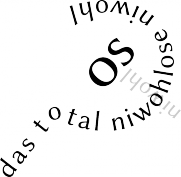

NiwohlOS
| niwohlOS "In God we trust – Da hilft nur noch beten" | |
|---|---|
 | |
| Entwickler: | DerHartmut SchreibeNieCode SHyx0rmZ XanClic |
| Akt. Version: | 0.1.0 |
| Lizenz: | MIT/X11 |
| OS-Eigenschaften | |
| Plattform: | i386/x86-64/ARM |
| Kernelart: | Micromonolithischer Modularhybrid |
| Sprache: | C, Assembler (Syntax: Intel und Falschrum) |
| API: | POSIX (nur besser, weil noch kaputter) |
| Binärformat: | ZWÖLF |
| IPC-Methode: | V.O.M.I.T. (Verbose Object-oriented Machine-readable Information Transfer) |
| Homepage | |
- „Ich verstehe Ihre Frage so, dass es Benutzer gibt, die wünschen, dass wir die Entwickler von niwohlOS dazu mobilisieren, um einen Paketfilter zu implementieren. Mir ist nicht bekannt, dass eine solche Absicht besteht. Die Entwickler kooperieren zur Sicherung von niwohlOS eifrig mit dem BSI, und ihre Arbeitskraft wird dafür voll eingesetzt. Niemand hat die Absicht, eine Firewall zu errichten!“
- — Linus Torvalds, der alte Kommunist, äußert sich zu niwohlOS.
niwohlOS (hochprofessionellisch für: Niveau-L-OS) ist ein hochmodernes Betriebssystem für die x86-Architektur. Es wird von bekannten hochprofessionellen Entwicklern aus dem IRC-Channel #niwohlos im euIRC entwickelt.
Inhaltsverzeichnis
- 1 Inside niwohlOS
- 2 Die Entwickler
- 3 Frequently Asked Questions (FAQ)
- 3.1 Mal ehrlich, seid ihr eigentlich 4chan oder so?
- 3.2 Wie werde ich eigentlich Entwickler bei niwohlOS?
- 3.3 Wie bewirbt man sich als Committer?
- 3.4 Was ist V.O.M.I.T.?
- 3.5 Ist niwohlOS in safe language geschrieben?
- 3.6 Habt ihr eigentlich Angst vor der Konkurrenz?
- 3.7 Was war an der GUI nochmal so besonders?
- 3.8 Was für Tabletten nehmt ihr eigentlich? Und warum nehmt ihr nicht genug davon?
- 4 Kritik
- 5 Fertig implementiert
- 6 Teilweise implementiert
- 7 Rudimentär implementiert
- 8 To-Do
- 9 Siehe auch
- 10 Weblinks
Inside niwohlOS
Im folgenden wird kurz im hochreießrischen und hochprofesionelen Marketinghochdeutsch auch für Laien hochverständlich beschrieben, wie niwohlOS funktioniert. Für einen (sehr viel höheren) tieferen Einblick sei NiwohlOS/Deep_inside ans Herz gelegt.
Bootvorgang
Phase Ia: GRUB
Als Bootloader wird der hochprofessionelle Bootloader GRUB verwendet. Dieser wird von zahlreichen professionellen Firmen und Betriebssystemen seit Jahren mit Erfolg eingesetzt und verspricht eine optimale Grundlage für jedes Betriebssystem. GRUB richtet eine standardisierte und standartisierte Umgebung ein und übergibt der zweiten Phase, dem niwohunloader, alle nötigen Daten, die sie benötigt. Auch lädt GRUB dank hochperformanter Lademechnismen unsere beiden Kernel stoiber32 und stoiber64 in den Speicher.
Phase II: niwohunloader
Um dem User unnötige und komplexe Konfiguration abzunehmen, wird nach dem eigentlichen Bootloader ein Zwischenloader, der niwohunloader, geladen. Dieser entscheidet anhand komplexer und hochperformanter Algorithmen, welche Systemarchitektur der entsprechende Computer besitzt und lädt daraufhin alle passenden Komponenten nach. Hierdurch ist ein voll-automatisierter Ablauf des Ladeprozesses bei optimaler Perfomance und höchster Stabilität garantiert.
Kernel
Allgemeines Konzept
Die Kernel sind micromonolithische Modularhybride. Im Klartext bedeutet das: niwohlOS hat monolithische Kernel, die zur Laufzeit Module einbinden können. Diese laufen dann mit speziellen Privilegien im Usermode. Dadurch kann das Grundsystem beliebig erweitert werden und auf die individuellen Bedürfnisse jedes einzelnen Users ausgerichtet werden. Gleichzeitig wird aber auch die hohe Performance und die extreme Stabilität gewährleistet. Der monolithische Teil wird so klein wie möglich gehalten, um die vorausgesetzte optimale Performance zu garantieren.
32-Bit: stoiber32
Für alle Computer mit bewährten und dennoch hochperformanten 32-Bit-Prozessoren dient der 32-Bit-Kernel stoiber32. Dieser zeichnet sich durch eine extrem leistungsfähige Speicherverwaltung und ein auch unter Extrembedingungen noch optimal arbeitendes Multitasking aus, welches bis zu zwei Prozesse mit unglaublicher Geschwindigkeit nahezu parallel ausführen kann. Stoiber32 verfügt über ein Linux-Subsystem, mit dessen Hilfe es möglich ist, Linux-Module in den Kernel einzubinden.
64-Bit: stoiber64
Hochmoderne Computer mit hochperformanten und hochkomplexen 64-Bit-Prozessoren stehen dank stoiber64 neue Möglichkeiten zur Verfügung. Der 64-Bit-Kernel verfügt ebenfalls über eine hochoptimierte und auf 64-Bit-Systeme mit mehr als 4 Petabyte Arbeitsspeicher ausgelegte Speicherverwaltung, welche garantiert, dass ein Programm nie zu wenig Speicher hat, auch wenn zu wenig Speicher vorhanden ist. Win-Win-Situation wird dieses Verfahren im professionellem Umfeld genannt. Auch stoiber64 verfügt über hochperformantes Multitasking, welches ebenfalls bis zu zwei Programme nahezu gleichzeitig und in einer atemberaubenden Geschwindigkeit ausführen kann.
Namensherkunft
Da der Kernel emmmh (ein micromonolithischer Modularhybrid) ist, wird er auch als „Stoiber“ bezeichnet. Hierin soll auch das Ziel KISS (Keep it simple, stupid) zum Ausdruck kommen (in Anerkennung der Leistungen Edmund Stoibers beim Bürokratieabbau in Europa).
tl;dr: Wie Linux, nur geiler.
Treiber
Es gibt zwei Sorten von Treibern in niwohlOS: Ring-0-Treiber und Ring-3-Treiber (oder auch Kernel- und Usertreiber). Kerneltreiber werden direkt in den Kernel miteingelinkt und laufen mit der gleichen Privilegsstufe wie der Kernel, Usertreiber können zur Laufzeit nachgeladen werden und laufen im Ring 3, also mit Privilegien, die jedes normale Programm auch besitzt. Jder Treiber, auch CDI- oder UDI-Treiber, kommunizieren miteinander über niwoio, dem VFS von niwohlOS. Es dient sowohl zur Interprozesskommunikation zwischen den Treibern wie auch als Verwaltungseinheit für Treiber und Module.
Interfaces
Das Interface zu Treibern ist dual ausgelegt, als hochprofessioneller und berufserfahrener Treiberprogrammierer hat man somit die Wahl zwischen dem weltbekannten und von vielen System bereits erfolgreich eingesetzten CDI und dem bewährten UDI.
CDI
Da niwohlOS hochproffesionel und hochoptimiert ist bedient es sich natürlich auch nur hochproffesioneler und hochoptimierter externer Ressourcen. Darum implementiert niwohlOS CDI, das Common Driver Interface. Damit wird es möglich Gebrauch von hochproffesionelen und hochoptimierten Treibern zu machen und selbst solche zu entwickeln.
UDI
Die Vorteile liegen ganz klar auf der Hand:
- Unterstützung durch die Industrie aufgrund der einheitlichen ABI und der damit verbundenen Möglichkeit, Closed-Source-Treiber zu implementieren. Die Vertreter großer Hardwarehersteller wünschen sich schon seit langem einen einheitlichen Weg, alle Hobbybetriebssysteme (was niwohlOS eigentlich nicht ist) mit Treibern für ihre Hardware zu versorgen. Dies ist dank UDI nun endlich möglich.
- Unterstützung durch die extrem kompetenten Entwickler von osdev.org. Diese bereichern die Spezifikation immer wieder durch lebhafte Diskussionen. Außerdem werden sie nicht müde zu betonen, welch großartige Leistung von UDI-Treibern aufgrund der bisher von anderen Interfaces unübertroffenen Skalierbarkeit erreicht werden kann.
Interprozesskommunikation
Wie es sich für jedes anständige micromonolithische Modularhybridsystem gehört, implementiert natürlich auch niwohlOS einen Mechanismus der Interprozesskommunikation. Dabei wird, inspiriert von týndur, eine abgewandelte Form des Remote Procedure Calls eingesetzt: In die Kernel wird eine Untermenge eines generischen XML-Parsers implementiert, welcher XML-RPCs, welche durch Sockets übertragen werden, parst und dementsprechend an ein Eventsystem weiterleitet, welches von da aus alles weitere koordiniert.
GUI
Wie für alle größenwahnsinnigen Systeme wird natürlich auch in der relativ jungen Entwicklungsgeschichte von niwohlOS über eine grafische Benutzeroberfläche nachgedacht. Hier soll nicht allzuviel verraten werden, nur dass wir ein System namens D.U.M.M., inspiriert von Windows-Usern, entwickeln werden.
Emulation
Bei der Vielzahl von hochmodernen und weithochentwickelten Systemen soll niwohlOS keinerseits eine Konkurrenz darstellen. Vielmehr soll eine hochoptimierte Kohärenz zu diesen Systemen und deren Möglichkeiten bestehen. Dazu emuliert niwohlOS diverse Systeme mit einem ausgeklügelten Verfahren auf tiefster Ebene.
Linux
Linux wird in Form von Syscalls unterstützt. Dazu wird das Modul-System umgesetzt, damit Linux-Module hocheffizient geladen und hochoptimiert ausgeführt werden können.
PrettyOS
PrettyOS wird in Form eines didaktisch ausgeklügelten hochoptimierten Syscall-Redirection-Prozesses emuliert. Die fehlende und kaputte Speicherverwaltung wird selbstverständlich von niwohlOS bereitgestellt, sodass PrettyOS quasi zu einer Untermenge von niwohlOS wird.
Die Entwickler
Das Entwicklerteam besteht aus auf dem Gebiet der Betriebssystementwicklung hocherfahrenen Informatikern mit jahrelanger Programmiererfahrung, welche sicherlich zu den zukünftigen Leistungsträgern gehören, und DickHuuhn. Die Entwickler genießen zur Zeit eine Ausbildung bei der Elite der Betriebssystementwicklung im IRC-Channel #lost im euIRC. Durch monatelange Arbeit an dem hochkomplexen Betriebssystem týndur wissen sie, wie ein hochperfomantes und extrem stabiles System aufgebaut sein muss.
Niwohlosen Developers
Die niwohlosen Developers sind das Entwicklerteam rund um niwohlOS sowie anderen Projekten. Es besteht aus vier hochoptimierten, äh, hochintelligenten Programmierern und Softwareentwicklern.
XanClic alias Crazy-OS-names
XanClic (hochkomplexes Hybridakrobackronym) ist einer der Top-Entwickler von niwohlOS. Er besitzt auf dem Gebiet der Betriebssystementwicklung höchste Kompetenzen, entwickelte er doch schon mehrere Betriebssysteme im Alleingang (MyXomycota, Paloxena) und reichte schon zahlreiche Patches für týndur ein, wie einen AC97-Treiber, USB-Treiber und die hochkomplexe libmaumau, die es den Anwendern ermöglicht, Mau-Mau zu spielen. XanClic ist für den fragilen soliden Aufbau, das Grundgerüst in niwohlOS zuständig.
DerHartmut alias IAmBackAndWritingSoDamnFuckingShitForNiwohlOS
DerHartmut (kein hochkomplexes Hybridakrobackronym) ist ebenfalls einer der Top-Entwickler von niwohlOS. Er besitzt jahrelange Erfahrung auf dem Gebiet der Betriebssystementwicklung und daher beste Reputationen auf diesem Gebiet. Er entwickelte ebenfalls sein eigenes Betriebssystem im Alleingang (Nusskuchen) und arbeitet an einem neuen, hochoptimierten Betriebssystem, quasi als „Hobby“ neben niwohlOS. Er reichte bisher wenige, aber dafür umso wichtigere Patches bei týndur ein, darunter zwei hochperformante Interpreter für die wohl wichtigsten Sprachen im industriellen Umfeld, Malbolge und hq9+, er halb-portierte den extrem komplexen Mailclient mutt und implementierte einer der wichtigsten Features unter týndur: lpt moo. Er ist bei niwohlOS für alle kaputten hochoptimierten Stellen zuständig. Seine mannigfaltigen Pflichten in vielfältigen anderen Gebieten zwangen ihn allerdings bisweilen, die entsprechende Arbeit monatelang zeitweilig zu suspendieren. Nun ist er allerdings wieder "back to the roots" und arbeitet voller Enthusiasmus an niwohlOS.
SHyx0rmZ alias HardcoreProgger
SHyx0rmZ (hochoptimierter Buchstabenkomplex) ist auch einer der Top-Entwickler von niwohlOS. Er programmiert seit sage und schreibe 11 Jahren und weist in diesem Feld höchste Kompetenzen auf. Er wird oft als „Hardcore-Informatiker“ bezeichnet, denn er schafft, was andere nicht schaffen: Er hat sein hochperformantes und hochoptimiertes Betriebssystem Nuke mit gleich fünf Kerneln ausgestattet, um aus jedem erdenklichen System das höchste Maß an Leistung herauszukitzeln. Er ist bei niwohlOS für die ganz komplexen Sachen zuständig.
DickHuuhn alias DickHuuhn
DickHuuhn (kein hochkomplexes Hybridakrobackronym und auch kein hochoptimierter Buchstabenkomplex) ist ein Chiken. Allerdings nicht frittiert und auch nicht mit Mayonaise.
Die Committer
Neben dem Entwicklerteam gibt es zahlreiche hochprofessionelle Commiter, die wertvollen Code und wertvolle Ideen tagtäglich committen.
Cjreek alias Sado-Masochist aka Windows-User
Cjreek (kein Mensch weiß, was das heißen soll) ist ebenfalls ein hochprofessionelle Entwickler, der zur Zeit bei einem Tierversuch teilnimmt, bei welchem getestet wird, wie sich die dauerhafte ernsthafte Nutzung des sogenannten AußerBetriebssystems „Windows“ auf Mensch und Maschine auswirkt. Er hat ebenfalls weitreichende Erfahrungen in der Betriebssystementwicklung und entwickelt den multiboot-kompatiblen Bootloader NILO, der irgendwann als Ersatz für den hochprofessionellen GRUB dienen soll.
Paddy alias Paddynator
Paddy (kein Mensch weiß, wer das ist) ist ein geheminisvoller Entwickler, der sich zu unserem Projekt gesellt hat. Auf einmal war er da, wie aus dem Nichts tauchte er in #lost und #niwohlos auf. Keiner weiß wer er ist, keiner weiß, ob er was kann. Man weiß nur, dass er was gegen kwolf zu haben scheint...
Frequently Asked Questions (FAQ)
Da niwohlOS so avantgardistisch ist, ist es natürlich ganz klar, dass beim durchschnittlichen Betrachter direkt einige Fragen auftauchen. Dafür muss man sich nicht schämen. Also, eigentlich doch. Aber nur ein bisschen. Für diese Leute haben wir ein praktisches FAQ aufgesetzt.
Mal ehrlich, seid ihr eigentlich 4chan oder so?
Nein, die meisten Entwickler haben immer wesentlich mehr als vier IRC-Channels offen.
Wie werde ich eigentlich Entwickler bei niwohlOS?
Grundsätzlich darf jeder, der genug Freizeit hat und die gewisse Portion an Wahnsinn besitzt für niwohlOS entwickeln. Man schreibt dazu einen Patch und gesellt sich in den Channel niwohlOS. Der Patch wird dann mit Sicherheit nicht angenommen und niemals commited, außer es ist ein Super-Mööögaaa-Pätsch (Diese Aussage ist Copyright © 2009, 2010 by XanClic). Ansonsten kann man sich als Committer bewerben. Dazu betritt man den IRC-Channel #niwohlos und gibt ein kurz und bündiges Manifest darüber aus, warum man einen nehmen sollte. Desweiteren gilt der Grundsatz bei einer Bewerbung: Tits or GTFO.
Wie bewirbt man sich als Committer?
Sag ich nicht. Könnt’ ja jeder kommen. Nene.
Was ist V.O.M.I.T.?
V.O.M.I.T. steht für „Verbose object-oriented machine-readable information transfer“. Unsere besten Designer verbrachten Monate damit, ein ansprechendes und elegeantes Design für diese neue Art der Interprozesskommunikation zu entwerfen.
Dann haben wir aber doch XML-RPC genommen, weil das auch auf die Beschreibung passt.
Ist niwohlOS in safe language geschrieben?
niwohlOS wird natürlich in C und Assembler geschrieben. Außerdem wird es einen PHP-Intepreter geben, damit wir unseren IPC-Code von Wordpress klauen können. Also kann man beruhigt sein: niwohlOS ist fast so sicher wie die Rente!
Habt ihr eigentlich Angst vor der Konkurrenz?
Es gibt Konkurrenz?
Okay, um ehrlich zu sein: Ja, es gibt ein System. Das System heißt PrettyOS (Personally retarded ethymology table-tennis, yeah, operating system (dass es so heißt, ist allerdings nur eine Vermutung!)) und ist ein hochoptimiertes Betriebssystem mit einigen vollkommenen Neuerungen und Innovationen. Welche, das wissen wir auch nicht. Ach ja, und dann gibt es noch dieses „týndur“, aber der stellt ja eher keine Gefahr dar bei genauerer Betrachtung (und nachdem man die rosa-rote Naivitätsbrille abgenommen hat).
Was war an der GUI nochmal so besonders?
Das Konzept der GUI ist recht simpel, denn es ist einfach nur D.U.M.M.. Da viele User bereits Erfahrung im Umganng mit D.U.M.M.-heit besitzen, haben wir uns für dieses tolle Konzept entschieden. Falls du dumm bist und darum nicht genug Erfahrung mit D.U.M.M.-heit hast, hier die Auflösung: D.U.M.M. steht für „Deutsches Userinterface mit Mauszeiger“.
Was für Tabletten nehmt ihr eigentlich? Und warum nehmt ihr nicht genug davon?
Natürlich nur $WIRKSTOFF von $FIRMA. $WERBESPRUCH.
(Dieser Absatz wurde zensiert, weil Markenrechtler meistens Weicheier ohne Leben und/oder Freunde sind und keinen Spaß verstehen.)
Kritik
Zahlreiche professionelle Entwickler haben eine Kritik zu niwohlOS abgegeben:
- Hochprofessioneller, neutraler, unvoreingenommener Entwickler #1: „Jo“
- Hochprofessioneller, neutraler, unvoreingenommener Entwickler #2: „Super *Applaus*“
- Hochprofessioneller, neutraler, unvoreingenommener Entwickler #3: „Astrein.“
- Zufriedener Benutzer: „Wer sind Sie, und wie sind Sie in mein Haus gekommen?“
- Zufriedener Black Hat: „Oh EXPLOITABLE!“
- ehenkes: „niwohlOS <-- Name finde ich gut, ein Os, das sich nie Wohl fühlt...‚niw‘ rückwärts erinnert allerdings an ‚win‘“
Fertig implementiert
Folgende Teile sind fertig implementiert:
- Repository erfolgreich angelegt
- Ausgeklügelte Verzeichnisstruktur des Quelltextes
- State-of-the-art Makefile
Teilweise implementiert
Folgende Teile sind in Arbeit und schon teilweise implementiert:
- niwohunloader: Kann beide Kernel laden
- SMP: APs werden niwohlosisiert und laufen in Ermangelung genügender Tasks bisher noch im Leerlauf – theoretisch ist ein Multiprozessorbetrieb aber bereits möglich
Rudimentär implementiert
Folgende Teile hat irgendwer halb-besoffen runtergetippt und trotzdem eingecheckt:
- stoiber32: Kann schon Exceptions, Interrupts, Paging, APIC, Multitasking, Syscalls, SMP, …
- stoiber64: Kann auch schon Exceptions und lernt gerade physische Speicherverwaltung.
To-Do
Folgende Teile müssen noch implementiert werden:
Allgemeines
- Professionelle Homepage (verzögert sich leider aufgrund der Schließung von Geocities)
- Geeignetes Logo
von 4chan klauenerstellen
Library
- printf gut machen
- kprintf gut machen
- vsprintf gut machen
- libc.hiken
Kernel
- SMP ganz machen
- niwoio ausbauen
- Startvorgang und so
Verschiedenes
- Signifanten
- Unicode-Support (für ẞ und です)
- Programme
Und sonst so?
- Einfach alles
Siehe auch
- NiwohlOS/Deep_inside - ein tieferer Einblick in die Funktionsweise
Weblinks
Disclaimer: Dieses OS ist ein echtes Projekt und wird von uns aktiv entwickelt. Die genauen Beschreibungen zur Performance und Stabilität im Artikel könnten allerdings von der Wirklichkeit abweichen. Theoretisch. Natürlich stehlen wir auch keinen GPL-Code von Wordpress: Bei der Herstellung dieses OS wurden keine GNUs gequält.